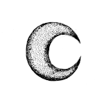
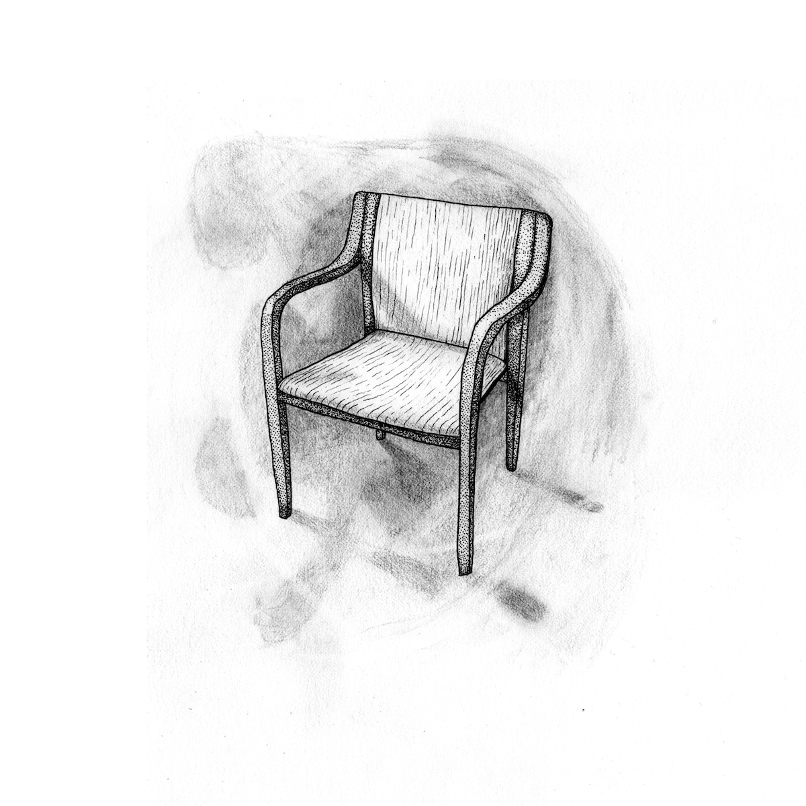

Drömmannen
Drömmannen har inte längre något eget rum på avdelningen, utan uppehåller sig på olika platser. Hans status som patient är långt ifrån självklar och det är kanske lättare att förstå honom som ett inslag där. Det finns en journal där han beskrivs som narcissistisk och paranoid, men ingenting nytt har antecknats i den på fyra år. Varken avdelningens läkare eller sjukhusets administration vill kännas vid honom och hänvisar till ett pågående försäkringsärende som befinner sig i en känslig fas.
Drömmannen är förtegen om sin verkliga identitet och hänvisar till särskilda skyddsskäl. Han växte upp i en av Stockholms mer välbärgade kranskommuner, men berättar bara om sin barndom i väldigt allmänna ordalag och är noga med att undanhålla alla detaljer som skulle kunna röja hans identitet.
”Jag hade en väldigt trygg uppväxt”, berättar han stolt. ”Båda mina föräldrar var väldigt omtänksamma och uppmuntrande, men ville kanske inte att jag direkt skulle göra så mycket saker. De var väldigt måna om min säkerhet.”
Han fördjupade sig istället i en sorts långdragen fantasy-litteratur som bara väldigt ensamma barn har tid och tålamod till. Parallellt med det intresserade han sig för sina föräldrars omfattande samling självhjälpslitteratur, som ofta hade nyandliga eller rent av esoteriska teman.
Det var då någon stal hans cykel. Han återkommer ofta till händelsen och hävdar själv att den var avgörande för hur han utvecklades som medborgare och människa.
”Jag hatar brottslingar”, säger han med visst eftertryck. ”Jag tyckte inte ens om cykeln men det spelar ingen roll. Det handlar inte om det.”
Han började experimentera med lucida drömmar. Det visade sig att han hade talang. Snart genomförde han astralresor och projicerade sig obehindrat i alla upptänkliga rumsliga dimensioner och åtminstone tre av dem som tiden sträcker ut sig i. Men till skillnad från de som skrev böckerna han hämtade inspiration ifrån så använde han inte sina förmågor till att kartlägga psyket och kosmos eller släppa sin inre potential fri. Istället klädde han sin astralkropp i en cape och reste ut i natten för att bekämpa brott.
”Jag hatar brottslingar”, upprepar han med betoning på ”hatar”. Manteln fladdrar lite i en vind som inte känns.
Han uppenbarar sig bara på Avdelning 34 i sin astralkropp och är av den anledningen lite knepig att bilda sig en uppfattning om.
Ofta verkar han befinna sig på flera platser i tiden och rummet samtidigt, eller så sträcker han ut sig på något förbryllande sätt som får andra människor att känna sig desorienterade eller illamående. Det är inte heller ovanligt att han böjer rummet runt sig på ett sådant sätt att han bara är syns från vissa vinklar. Ofta kan patienter se ut som att de sitter och talar med sig själva när de i själva verket konverserar med drömmannen. Det ska tilläggas att många patienter också ofta ägnar nätterna åt att prata med sig själva.
Karatehäxan är förmodligen den på avdelningen som har mest erfarenhet av astrala entiteter och hennes rum är det han oftast materialiserar sig i. Hon är också en av väldigt få levande människor som känner till hans verkliga identitet. ”Han vet att han kan lita på mig,” säger hon och ler, ”och han vet också att han inte borde.” Det är ett genuint leende som börjar i ögonen och saknar all den olycksbådande hotfullhet hon utstrålar i vanliga fall. Däremot hävdar hon att deras relation är strikt professionell och att den som antyder något annat borde tänka mer på att ”hålla käften”. ”Vi har gemensamma fiender, det är allt.”
Drömmannen vill inte alls kommentera deras relation utan försöker styra samtalet åt ett annat håll. ”Sa jag att jag hatar brottslingar?” frågar han retoriskt för tredje gången och fyrar av ett målmedvetet leende och vänder blicken lite snett uppåt. ”Det har jag alltid gjort. Ända sedan de stal min cykel.” 
Hans första ingripande var passande nog mot en misstänkt cykelstöld. Det var tidigt i hans karriär och han behärskade inte förflyttningen in och ut ur rumstiden ordentligt. Ingripandet urartade därför dessvärre och den misstänkte gärningsmannen halshöggs av cykelns bakhjul som dessutom fattat eld. Cykeln gick inte att rädda men dess rättmätige ägare uttryckte ändå försiktigt en viss tillfredställelse i lokaltidningen efteråt.
Därefter följde en serie spektakulära ingripanden mot olika enklare brott som väskryckningar, butiksrån och överfall. Inte sällan framför en hänförd folksamling och med omfattande materiella skador som följd. Det är också på grund av ett av hans medborgerliga ingripanden som två av rummen på Avdelning 34 saknar yttervägg och inte längre kan användas av patienter. Det ena tillhörde Byråkraten som hastigt installerades i Drömmannens gamla rum. Det andra tillhörde Pundar-Gudrun, som istället för att vänta på en ny inackordering rafsade ihop sina tillhörigheter och ett par meter blottlagd kopparledning i två tygkassar. Sedan begav hon sig av ut i natten med ett utsträckt långfinger som enda avsked. Flera patienter hävdar att hon fortfarande stryker omkring sjukhuset och då och då bryter sig in för att stjäla småsaker och stöka runt.
De flesta försäkringsbolag har friskrivningsklausuler för den typ av skador som drömmannen ofta orsakar på husfasader och parkerade bilar. Det är också anledningen till att hålet i avdelningens fasad fortfarande inte är åtgärdat efter mer än tre år. Försäkringsbolaget vägrar reglera skadan och hänvisar till att de inte kan ta ansvar för skador som uppstått utan grundläggande hänsyn till orsak och verkan.
Många experter hävdar att brottslighet bör förstås utifrån brottslingens motiv. Drömmannen avfärdar alla sådana idéer och slänger alltså dessutom gängse uppfattning om kausalitet åt sidan när han arbetar. Han kallar sin metod för drömlogik, en slags superkraft som låter honom avvärja brott innan de ens har planerats. Tyvärr är samhället i stort — och åklagarmyndigheten i synnerhet — illa rustat för att hantera den typen av ingripanden han ägnar sig åt. I de fall de misstänkta faktiskt har överlevt har de sällan kunnat dömas i domstol. Själv hävdar han att han motarbetas av en onödigt trög byråkrati medan myndigheterna påminner om att han utöver skador på personer och egendom också ofta utlöser diplomatiska kriser i stor och liten skala då hans ingripande sker utan hänsyn till nationsgränser och jurisdiktioner.
Han spenderar allt mer tid på Avdelning 34. Trots en välmenande — på gränsen till präktig — läggning kan man då och då ana en groende bitterhet. När byråkrati kommer på tal så spottar han nästan ut ordet. Han säger att han inte förväntar sig något tack från samhället, men att sättet som han slängdes ut från sitt rum ändå var ett övertramp från sjukhusets administration. ”Ett grovt övertramp”, lägger han till, innan han viker rummets väggar runt sig som en sovande fladdermus och försvinner ut i tomma luften. På andra sidan står Syster Frank blänger misstänksamt åt vårat håll. Hon tuggar långsamt på ett äpple. Temperaturen i rummet verkar sjunka.
©2018 Thomas Birgitta Pärsons